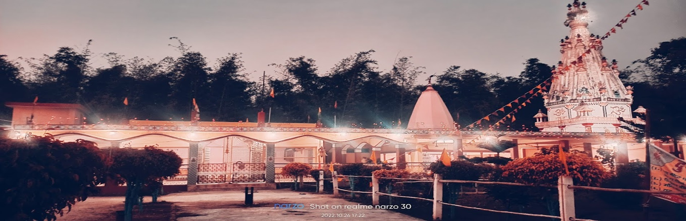
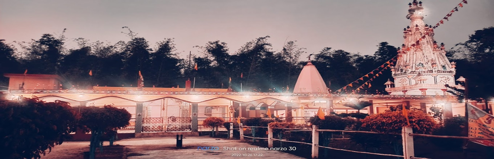

About the Temple
Durga Mahadev Sthan is a Hindu temple located in Hulas village, Supaul district which is part of the Mithila region of India.
The temple is dedicated to the goddess Durga and the god Shiva.
The temple is one of the most important religious sites in the region and attracts a large number of pilgrims every year from Nearby Places.
History and Significance:
➢The Mahadev temple is said to have been built prior of 18th century.➢The temple is dedicated to both Goddess Durga and Lord Shiva, making it a unique and significant pilgrimage site for devotees of both deities.
➢The temple complex also houses shrines dedicated to Lord Ganesha, Goddess Parvati, and other Hindu gods and goddesses.
Architecture and Layout:
➢The temple complex is spread over a large area and features traditional Hindu temple architecture.➢The main shrine dedicated to Goddess Durga is adorned with intricate carvings and sculptures depicting scenes from Hindu mythology.
➢The Shiva lingam enshrined within the temple is considered to be very sacred and attracts a large number of devotees.
➢The temple complex also features a spacious courtyard, a marigold pond, Flowery Garden, and several rest places for pilgrims.
Festivals and Celebrations:
➢The temple decorated during major Hindu festivals like Durga Puja, Saraswati Puja, Ram Navmi, Mahashivratri etcs.➢During these festivals, the temple is decorated with colorful lights and flowers, and special pujas and rituals are performed.
➢The annual Durga Puja celebrations at the temple are particularly grand and attract thousands of devotees from all over the District.
Best time to Visit:
The best time to visit the temple is during the festivals like Durga Puja , Mahashivratri , Basant Panchmi, Ram Navmi etcs which is celebrated with Joy & Peace. During this time, the temple is decorated with lights and flowers and a large number of pilgrims visit the temple.How to Reach:
The temple is located about 6 kilometers from Raghopur-Simrahi Town. The nearest railway station is Raghopur Station, which is about 6 kilometers from the temple. The nearest airport is Darbhanga Airport, which is about 100 kilometers from the temple.